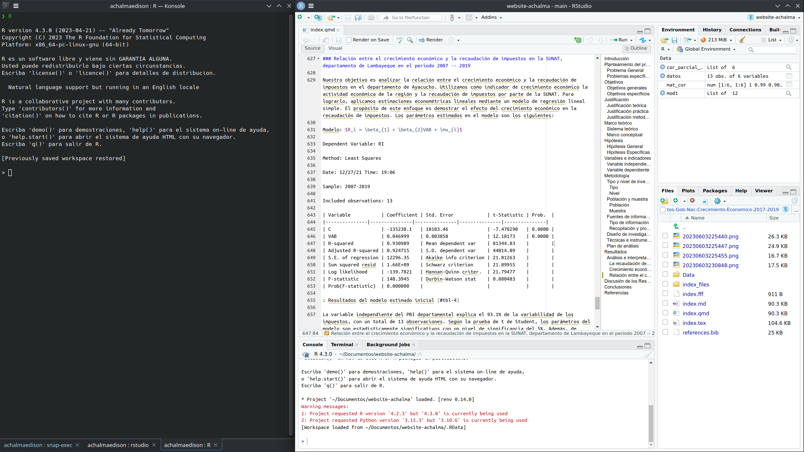

3 Instalación
En este artículo, te guiaré para descargar e instalar R y RStudio en sistema operativo Ubuntu Linux.
3.1 Paso 1. Descargar R en Ubuntu Linux
Para comenzar, necesitarás descargar el paquete de instalación de R desde el sitio web oficial de R. Abre tu navegador web y sigue este enlace: Enlace de descarga de R
R es un lenguaje de programación ampliamente utilizado en la comunidad estadística y de análisis de datos, y es especialmente popular entre los científicos de datos y los investigadores.

3.2 Paso 2. Instalar R en Ubuntu Linux
Los paquetes para la versión actual de R 4.2 están disponibles para la mayoría de las versiones estables de Ubuntu Desktop. Sin embargo, solo la última versión de Soporte a Largo Plazo (LTS) cuenta con soporte completo. A partir del 2 de mayo de 2022, las versiones compatibles son:
- Jammy Jellyfish (22.04, solo amd64)
- Impish Indri (21.10, solo amd64)
- Focal Fossa (20.04; LTS y solo amd64)
- Bionic Beaver (18.04; LTS)
- Xenial Xerus (16.04; LTS)
Ejecuta estas líneas (si eres root, omite sudo) para informar a Ubuntu sobre los binarios de R en CRAN.
# Actualizar índices
sudo apt update -qq
# Instalar dos paquetes auxiliares necesarios
sudo apt install --no-install-recommends software-properties-common dirmngr
# Agregar la clave de firma (de Michael Rutter) para estos repositorios
# Para verificar la clave, ejecuta: gpg --show-keys /etc/apt/trusted.gpg.d/cran_ubuntu_key.asc
# Huella digital: E298A3A825C0D65DFD57CBB651716619E084DAB9
wget -qO- https://cloud.r-project.org/bin/linux/ubuntu/marutter_pubkey.asc | sudo tee -a /etc/apt/trusted.gpg.d/cran_ubuntu_key.asc
# Agregar el repositorio de R 4.0 de CRAN -- ajustar 'focal' a 'groovy' o 'bionic' según sea necesario
sudo add-apt-repository "deb https://cloud.r-project.org/bin/linux/ubuntu $(lsb_release -cs)-cran40/"Aquí utilizamos lsb_release -cs para acceder a la versión de Ubuntu que estás utilizando: “jammy”, “impish”, “focal”, “bionic”, …
Luego, ejecuta
sudo apt install --no-install-recommends r-base3.3 Obtén más de 5000 paquetes de CRAN
Ejecuta este comando (como root o agregando sudo como prefijo) para agregar el repositorio actual de R 4.0 o posterior ‘c2d4u’:
sudo add-apt-repository ppa:c2d4u.team/c2d4u4.0+para agregar el ID de clave de este repositorio, agregar el repositorio y actualizar el índice. Ahora puedes hacer apt install --no-install-recommends r-cran-rstan o apt install --no-install-recommends r-cran-tidyverse (nuevamente como usuario root o a través de sudo).
3.4 Paso 3. Descargar RStudio en Ubuntu Linux
Puedes descargar la última versión de RStudio desde su sitio web oficial: Enlace de descarga de RStudio
RStudio RStudio es un entorno de desarrollo integrado (IDE) muy popular para trabajar con R. Proporciona una interfaz gráfica intuitiva y muchas herramientas útiles para la programación en R.

3.5 Paso 4. Instalar RStudio en Ubuntu Linux
3.5.1 Instalar dependencias
Antes de instalar RStudio, es posible que debas instalar algunas dependencias en tu sistema. Abre la terminal y ejecuta los siguientes comandos para instalar las dependencias requeridas:
sudo apt update
sudo apt install gdebi-coreEstos comandos actualizarán los repositorios de paquetes y luego instalarán gdebi-core, una utilidad necesaria para instalar paquetes .deb de forma sencilla y para resolver dependencias automáticamente.
3.5.2 Instalar RStudio
Una vez que hayas descargado el archivo de instalación de RStudio y hayas instalado las dependencias necesarias, puedes proceder con la instalación. Ve al directorio donde descargaste el archivo de instalación y ejecuta el siguiente comando en la terminal:
sudo gdebi <nombre_del_archivo_de_instalación>.debReemplaza <nombre_del_archivo_de_instalación> con el nombre real del archivo de instalación descargado.
El comando gdebi instalará RStudio y resolverá automáticamente las dependencias necesarias.
3.6 Paso 5. Iniciar RStudio
Una vez completada la instalación, puedes iniciar RStudio desde el menú de aplicaciones de Ubuntu o ejecutando el siguiente comando en la terminal:
rstudioRStudio se abrirá en una ventana separada, lo que te permitirá comenzar a trabajar con R y aprovechar todas las funciones y características que ofrece el IDE.
